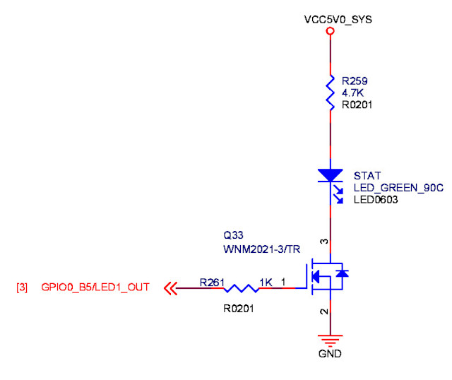
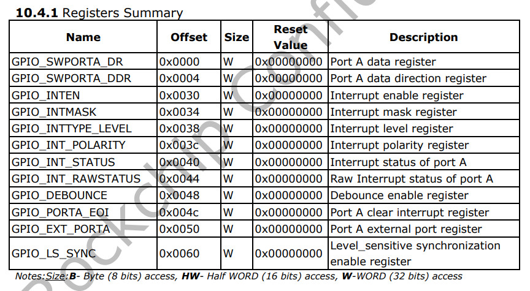
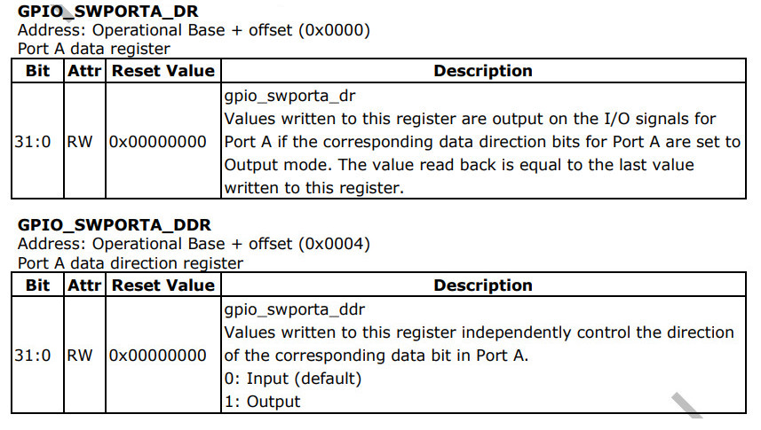
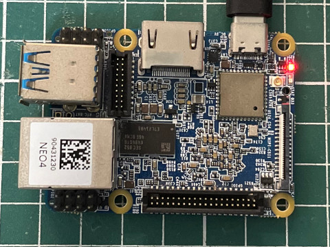
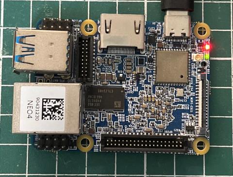

參考資訊：
https://github.com/xboot/xrock
https://github.com/trebisky/Rockchip
https://wiki.friendlyelec.com/wiki/index.php/NanoPi_NEO4
https://courses.cs.washington.edu/courses/cse469/19wi/arm64.pdf
https://www.rockchip.fr/Rockchip%20RK3399%20TRM%20V1.3%20Part2.pdf
LED腳位



.global _start
.equ GPIO0_BASE, 0xff720000
.equ PA_DAT, (GPIO0_BASE + 0x00)
.equ PA_DIR, (GPIO0_BASE + 0x04)
.text
_start:
b reset
.org 0x100
reset:
ldr x0, =PA_DIR
ldr w1, =0xffffffff
str w1, [x0]
ldr x0, =PA_DAT
ldr w1, =0xffffffff
0:
eor w2, w2, w1
str w2, [x0]
ldr w3, =1000000
1:
subs w3, w3, #1
bne 1b
b 0b
.end
main.ld
MEMORY {
RAM : ORIGIN = 0, LENGTH = 64K
}
SECTIONS {
.text : { *(.text*) } > RAM
.data : { *(.data*) } > RAM
.bss : { *(.bss*) } > RAM
}
Makefile
all: aarch64-linux-gnu-as -mcpu=cortex-a53 -o main.o main.s aarch64-linux-gnu-ld -T main.ld -o main.elf main.o aarch64-linux-gnu-objcopy -O binary main.elf main.bin run: xrock extra maskrom --rc4 on --sram main.bin clean: rm -rf main.bin main.o main.elf
編譯、執行
$ make
aarch64-linux-gnu-as -mcpu=cortex-a53 -o main.o main.s
aarch64-linux-gnu-ld -T main.ld -o main.elf main.o
aarch64-linux-gnu-objcopy -O binary main.elf main.bin
$ make run
xrock extra maskrom --rc4 on --sram main.bin
完成

